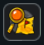
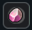

Dungeons to elitarne, unikalne instancje (lochy), których portale otwierają się niespodziewanie w głąb niebezpiecznego wymiaru DimensionZ.
| Nazwa Przedmiotu | Działanie i Funkcja | Jak zdobyć? |
|---|---|---|
|
 |
Skanuje najbliższy obszar mapy w poszukiwaniu otwartego portalu lochów. Każda próba lokalizacji zużywa 1 ładunek. | Dropi z potężnego World Bossa wewnątrz DimensionZ. |
|
 |
Służy do natychmiastowego uzupełniania wyczerpanych ładunków w urządzeniu Dungeon Finder. | Dropi z World Bossa lub do kupienia w Mission Store. |
Ważne Uwagi:
• Dungeon Finder nie generuje portali, a jedynie wskazuje drogę do tych, które już istnieją.
• Wszystkie portale są kasowane podczas porannego Server-Save.